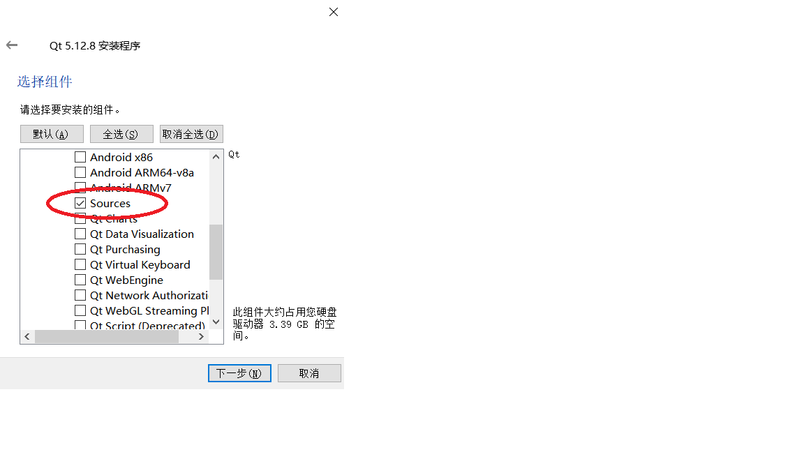
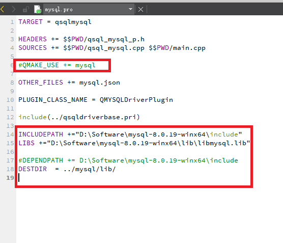
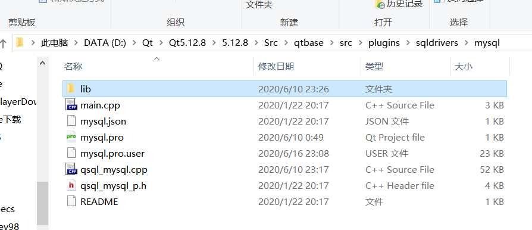
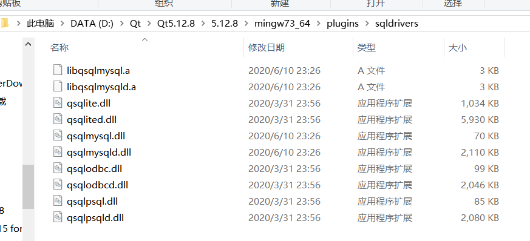
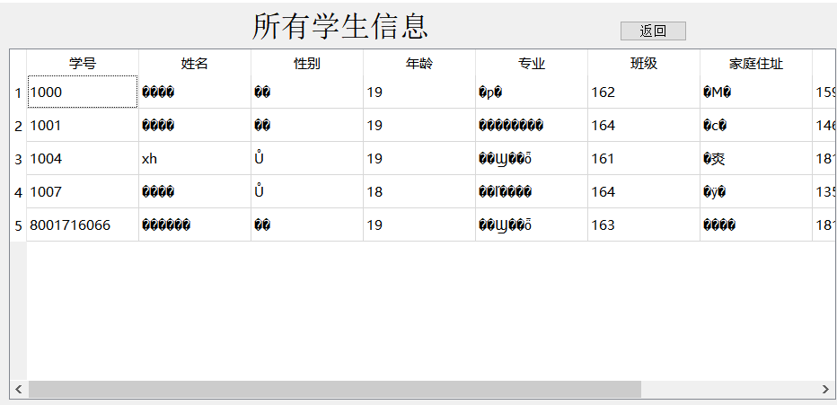
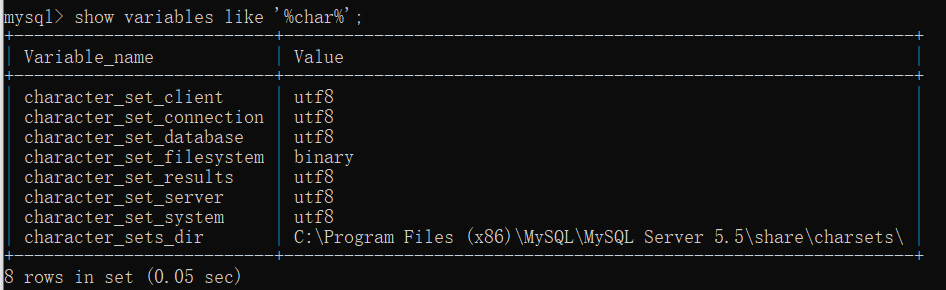
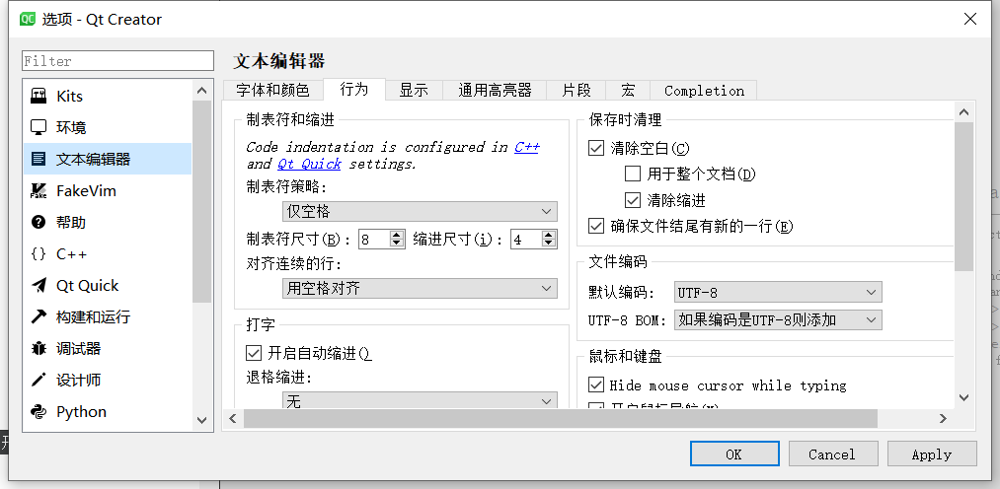
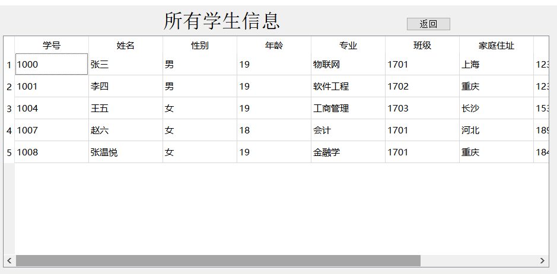

QT+MySQL 无法连接数据库和中文乱码问题解决方案
# 无法连接MySQL情况一
报错代码：
- QSqlDatabase: QMYSQL driver not loaded
- QSqlDatabase: available drivers: QSQLITE QMYSQL QMYSQL3 QPSQL QPSQL7
首先，我们使用QT连接MySQL的时候尽量保持位制相同，比如64位QT连接64位MySQL,32位QT连接32位MySQL。笔者的配置为 QT 5.12.8（64位）MySQL 5.7.21（64位）
解决方案：
从MySQL（C:\Program Files \MySQL\MySQL Server 5.7\lib）中复制libmysql.dll文件到QT对应的安装目录下（D:\Qt\Qt5.12.8\5.12.8\mingw73_64\bin）。
# 无法连接MySQL情况二
报错代码：
- "QSqlDatabase: QMYSQL driver not loaded
- ,QSqlDatabase: available drivers: QSQLITE QODBC QODBC3 QPSQL QPSQL7"
首先，我们使用QT连接MySQL的时候尽量保持位制相同，比如64位QT连接64位MySQL,32位QT连接32位MySQL。笔者的配置为 QT 5.12.8（64位）MySQL 5.7.21（64位）
解决方案：
我们可以从第二条报错代码中看到没有QMYSQL提示，说明错误原因极有可能是没有MySQL驱动，那么就需要我们进行手动编译。编译方法如下：
1.安装QT时，记得选择安装QT的源文件(Source文件)，如果发现QT安装目录中没有Src文件，请卸载重新安装。

2.在QT安装目录中找到：D:\Qt\Qt5.12.8\5.12.8\Src\qtbase\src\plugins\sqldrivers\mysql\mysql.pro文件，然后用QT打开该文件。
在文件中添加：
INCLUDEPATH +="C:\Program Files\MySQL\include"（该路径是刚才下载解压备用的mysql的头文件路径） LIBS +="C:\Program Files\MySQL\lib\libmysql.lib"（该路径是刚才下载解压备用的mysql的库文件径）
DESTDIR = ../mysql/lib/(为了方便查找将来编译好的库文件，添加这个语句用来指明编译后的结果输出的位置)
#QMAKE_USE += mysql(同时一定要屏蔽QMAKE_USE += mysql:如下.如果不屏蔽会提示mysql库不存在)
具体如下图所示：

3.编译:修改完mysql.pro文件的内容后，点击构建(Ctrl+B或者左下方小锤子)，执行编译，等待下方构建完成后，在mysql文件夹（D:\Qt\Qt5.12.8\5.12.8\Src\qtbase\src\plugins\sqldrivers\mysql）中就会多出一个lib文件夹。

4.配置：打开这个lib文件夹，里面有四个文件全部拷贝到你的QT安装路径D:\Qt\Qt5.12.8\5.12.8\mingw73_64\plugins\sqldrivers中，如下图：

好了，完成以上步骤我们重新打开工程文件，发现可以连接MySQL服务器了。
# 使用MySQL中文乱码
错误情况：
使用QT时，可以以英文和数字对MySQL进行读写，但是中文显示为乱码，且不能写入。

解决方法1：
重新编译Qt的MySQL驱动，需要修改src/sql/drivers/mysql/qsql_mysql.cpp文件。要修改的部分如下：codec函数，注意return QTextCodec::codecForName("GBK");，是需要修改增加的语句。
static QTextCodec* codec(MYSQL* mysql)
{
return QTextCodec::codecForName("GBK");
#if MYSQL_VERSION_ID >= 32321
QTextCodec* heuristicCodec = QTextCodec::codecForName(mysql_character_set_name(mysql));
if (heuristicCodec)
return heuristicCodec;
#endif
return QTextCodec::codecForLocale();
}
解决方法2：
QT的默认编码是utf-8，而MySQL的编码是在安装数据库（或后续可更改）就时设置的。有时候两者可能不一样，所以只能在打开数据库连接操作的时候设置编码了，即在QSqlDatabase对象调用open()方法之后设置。设置方法为：
QSqlQuery query(db);
db.exec("SET NAMES 'GBK'");
解决方法3：
出现乱码问题，首先确保Qt和mysql两边编码方式一样，全部改为UTF-8.
在MySQL中：我们通过show variables like ‘%char%’；可以查看MySQL的编码方式，如果有不是utf8的，请改成utf8，如下图：

在QT中：我们打开工具中的文本编辑器，把默认编码改为UTF-8，如下图：

结果：
通过以上三种方式，可以解决大部分中文乱码问题,结果图如下：

# 小结
本文只是简单的说明了QT+MySQL中无法连接数据库和中文乱码问题，情况仅为笔者所处环境，望各位读者对应自己情况修改问题，希望本文可以对你有所帮助。